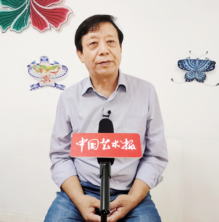
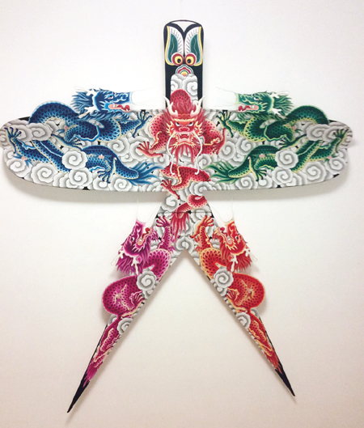
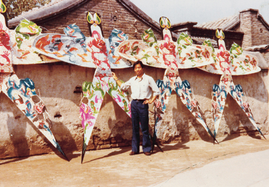

我们生产的每一个风筝都能讲出一个故事——专访风筝艺术家、哈氏风筝第四代传人哈亦琦


从一百多年前的“风筝哈”到今天的“哈氏风筝”，体现的不仅是风筝技艺名号的变化，更是一个响亮品牌的成长历程和风筝文化的家族传承。
作为哈氏风筝的第四代传人，哈亦琦从小就受到家族内浓厚风筝文化的熏陶，他继承了家族的独特技艺，在现代艺术理念的影响下，又对哈氏风筝的发展作出了更进一步的创新探索。2013年，哈亦琦凭借风筝作品《五龙燕》获得了“第十一届中国民间文艺山花奖·民间工艺美术作品奖”。哈亦琦也在2012年被评定为国家级非物质文化遗产代表性项目风筝制作技艺（北京风筝哈制作技艺）国家级代表性传承人。
今年70岁的哈亦琦仍在继续着自己的传承和创新工作，参加文艺志愿服务活动、画图谱、带徒弟、进校园……为了将这门民族优秀传统工艺传下去，“一直到今天，我每天都在努力，没有一天休息”，这大概是哈亦琦对风筝最深情的告白。

一、谈成长：家族熏陶下的风筝记忆
中国艺术报：说起哈氏风筝，人们总会提到一句话，“进北京，逛厂甸儿，玻璃琉璃大沙燕儿”，形容的是您曾祖父哈国梁最早在北京琉璃厂开办的哈记风筝店。您之前也做过哈氏风筝的口述史记录和研究，对这段历史一定很了解，可以介绍一下这段历史吗？
哈亦琦：我们祖上最早生活在新疆，考武状元进京，后因事变革职，家道中落，于是在京城琉璃厂开了一家风筝店。为什么要卖风筝？因为卖风筝挣得比较多，特别是卖大风筝，所谓“大沙燕”就是指大小在8尺到1丈2之间的沙燕形状风筝。当然，这类风筝对制作者手艺的要求也比较高，所以形成了一个品牌，“进北京，逛厂甸儿，玻璃琉璃大沙燕儿”这句民谣也流传下来。那时，曾祖父的店在琉璃厂西北角，20多平方米，春节前夕到阴历4月份是卖风筝的季节，其他时间都经营饭馆。当时风筝店火到什么程度？我父亲告诉我，到卖风筝的季节，他们就在房檐上架起竹竿架子，放上四五个大型或中型的风筝作为“广告招牌”，买的人络绎不绝。特别是那些有钱人，他们花钱买了大风筝，一般自己不放，都是我二伯父或三伯父帮他们放，买主再给我们一笔辛苦费。
中国艺术报：到您父亲哈魁明这一代，对风筝艺术传承就不只是在技艺方面了，他也有着更深入的思考。
哈亦琦：我父亲排行老五，18岁时就辍学了，因为祖父想让他来继承这门手艺。当时祖父让他的6个孩子做“钟馗嫁妹”的风筝图样，因为这个题材中人物较多，制作有难度，所以想以做“钟馗嫁妹”来衡量一下他们的水平，我父亲用了三天三夜的时间就做出来了，据说当时还卖了十几块大洋。从那以后，祖父就让父亲继承了这门手艺。
父亲善于设计风筝图样，按照客人的需求进行设计，后来就形成自己的风格，很多风筝样式就这样延续下来。1956年实行公私合营后，父亲一直割舍不掉这门技艺，他把做风筝当成了一种爱好，在工作之外，天天做风筝，做好之后再送给朋友。父亲去世后，给我留下了几本笔记，里边记录着他的制作过程、制作经验和体会，还画了很多示意图，对我后来传承发展哈氏风筝的风格起到了非常重要的作用。

二、谈从艺：在制作风筝方面有了更多的艺术自觉
中国艺术报：您在家族熏陶下培养起了对风筝的兴趣，但在参加工作后，您并没有从一开始就学习制作风筝，而是先学了美术。
哈亦琦：是的，在当时的社会环境中，做风筝并不是一个好的出路，做了风筝不能销售，学习的人也就比较少了。1972年，我18岁，那时已经参加工作。工作单位每个月要出几期板报、专栏，还需要刷一些标语、美术字等。中央美术学院的老教授侯一民带着学生来体验生活，告诉我们做美术方面的工作要学习绘画。我从小就喜欢画画，也有一定的绘画基础，听老教授这么一说，就决心正式学习绘画。我表哥介绍了一位毕业于中央美术学院的画油画的老师，我每周去一次，跟他学习速写、素描、写生等等；那时我时间也比较充裕，经常背一个小型速写画箱去八宝山附近写生。
到了1977年，有一次朋友要出国探亲，他让我给他做两个风筝，送给在国外的亲人。我就做了一个“瘦燕”和一个“肥燕”。做完之后我的兴趣突然就来了，正式跟父亲提出来要学做风筝。父亲让我先做一个一米左右“瘦沙燕”，他告诉我制作的要点，因为从小耳濡目染，劈竹子、削竹子、黏贴、捆绑，我都已掌握。第一次做“瘦沙燕”用了一个多星期的时间，我做了一个“五鱼燕” ——燕子的腿上有两个鱼、翅膀上有两个鱼、身子中间有一个鱼，放飞时，风筝一下就飞了起来。父亲看到后非常高兴，但他没有显露出来，而是用激将法对我说：“你这是蒙的，你再做几个我看看。”于是我又用了一个多月的时间做了4个风筝，风筝的制作水平和放飞性能都得到了父亲的认可。
中国艺术报：学了美术专业之后，在制作风筝方面是不是有了更多的艺术自觉？
哈亦琦：是的，我记得我第一个自主设计的风筝是“蓝凤蝶”，灵感来源是祖父1915年得奖的蝴蝶风筝。在设计“蓝凤蝶”时，我考虑到了风筝的造型、图案设计、色彩对比等等。我按照我们祖辈的蝴蝶风筝来设计风筝造型，但跟他们不同的是，我利用了西方绘画的技法和色彩运用，设计了有冷暖对比效果的颜色。“蓝凤蝶”是我非常满意的作品，在我进入中国北京风筝艺术公司工作之后，这个风筝的价格卖得很贵，但也是卖得最多的，一直延续到现在还在卖，风筝的图案也没有变。艺术是相通的，学习了美术之后我才正式学做风筝，我就把所有的业余时间都投入到做风筝之中。
中国艺术报：进入中国北京风筝艺术公司，算是您第一份与风筝相关的正式工作，可以介绍一下这段经历吗？
哈亦琦：我是在1979年10月调入这家公司的，公司地址在中国美术馆。当时中国没有制作风筝的企业，中国美术馆最先成立了风筝协会，后来又成立了这家风筝艺术公司。那时，中国美术馆给了我们两间办公室，就在现在美术馆后面的平房。后来我们搬了几次地方，公司归入到北京市工艺美术品总公司之中，名字改为北京民间艺术品公司。当时有这么一个观念：风筝制作无污染、无噪音，能解决就业，还能换取外汇，给国家创造利润，所以特别受重视。那时公司业务以风筝设计、生产、销售为主，风筝销量很大，可以说北京所有工艺品店都在卖我们公司的风筝。刚进公司时我是做技术指导的师傅，带着10个没考上大学的高中生当徒弟。后来我又做了组长、副厂长、厂长、副经理，一直延续到1993年。
中国艺术报：在这期间，您自己也获得了很多荣誉。
哈亦琦：对，在公司里，我一边指导其他工人一边继续学习，一有空闲就做中型或大型的风筝，我还做过30多个新型结构的风筝，看起来非常现代。1983年，我被派去美国参加中国风筝展览，这个展览展出了北京、天津、潍坊、南通4个地方的风筝，我带了20多件家族风筝参加展览。
在美国待了一个多月，我还参加了在旧金山举办的“国际风筝表演比赛大会”。我在当地购买了菲律宾竹子，加上从国内带过去的面料，做了5个1米的风筝、1个近3米长的大型“瘦沙燕”风筝。比赛大会为期一个月，在这一个月的时间里，我一边做风筝一边讲课，讲了7次课，风筝也慢慢做好了。那个近3米长的“瘦沙燕”风筝，翅膀立起来比房子还高，但“沙燕”的“身子”比较窄。美国人好奇：这么窄的风筝能飞起来吗？当时没时间试飞，我只是按父亲告诉我的方法：如果放飞时风大，就在风筝后加一层竹条，我们的术语叫“背条”，加大强度。我就靠着自己的感觉做了出来。我还记得比赛那天是1983年5月17日，我第一个出场——主持人说“有请来自风筝发源地中国的风筝专家讲话”，我拿着风筝走进来，在一万多名现场观众面前讲话。讲完话就开始表演，那时我才发现，现场风很大，风筝不太好掌控。可让我没想到的是，6只风筝全部顺利地飞起来了，这次表演特别成功，也说明我的技术已经到位了。
中国艺术报：您在风筝公司的工作也算风生水起，最后为什么离开了那里？
哈亦琦：第一个原因是因为我父亲病重。他去世前跟我说了几句话，他说：第一，以前你帮我画画谱，我不理解，现在我理解了，用绘画的形式把风筝图案描绘下来，更有利于保存；第二，该教给你的我都教你了，以后的路你要自己走了。父亲生病期间，我感觉自己担子越来越重了，虽然我有几个哥哥，但我是哈氏风筝第四代唯一的传承人。离开公司的第二个原因，是我所在的公司在转变方向，不以销售风筝为主了。这也促使我自己“下海”打拼。我记得特别清楚，1993年6月29日，父亲去世那天，我拿到了租用的办公室的钥匙。那是一个40多平方米的办公室，我就在那里开办起了自己的公司。
我以前没做过生意，真正“下海”后才感觉到经商的困难。第一笔生意是给新加坡的买家做风筝，我们赚了8300元钱。而第二笔生意是在1994年4月份，当时北京市政府到荷兰办展览，点名要哈氏风筝去参展，我们展出了上百件作品，边展览边销售，卖出了26000元钱。
在公司发展的过程中，我们也遇到了很多问题，比如，随着社会的发展，用来放的风筝越卖越少。面对这个问题，我们就开始转型做装饰风筝。以前我们做的用来放飞的风筝，都是用丝绸做原料、手工制作，成本高，卖得却比较便宜，因为很多人都在做，卖不上价。后来我们开始做小风筝——不用来飞的风筝，可以放在镜框里面。我们给小风筝签上字，成本低了、卖得还特别好，有时候一卖就是好几百件，一件100元钱，一下就是好几万元，非常不错。另外，我们也将风筝图案做成了文创产品，把它们印到台灯、玻璃盘、钟表、 T恤等日常用品上，不是整个图案都印上去，而是切割下来一个局部，这样做出来就非常好看。


三、谈品牌：哈氏风筝属于整个民族
中国艺术报：大约是从什么时候开始，您感觉到用来放的风筝越来越少了，变成工艺品的风筝越来越多？您又是怎么理解风筝这一变化的？
哈亦琦：应该是从20世纪90年代末到21世纪初，我们卖的用来放飞的风筝越来越少，我明显感觉到了转变的发生。从我跟父亲正式学习做风筝一直到现在，我体验了学习、设计、生产、销售的整个过程，我感觉到了风筝是中华优秀传统文化的组成部分，由一代又一代手工艺人传承至当代。能传承至今，说明它随着社会的发展，功能也在变化。
我记得父亲跟我们讲过：过去风筝挂在墙上时，有画面的那一面朝墙、不朝外，这样是怕损坏了风筝。另外，在过去的诗词歌赋中，说起风筝，人们只是提到放飞它的情景，很少有人提到风筝表面的图画有多美。但随着社会的发展，人们对风筝的认知产生了变化，也开始注重风筝表面的图画了。而且，当你放完一个风筝时，不会把它随便扔到一边，而是要好好保存下来。这说明我们的风筝民俗变了。
我个人也在按照父亲的要求把风筝图谱画下来，从2001年开始，我一直画到现在。2016年时，我把100幅风筝图谱捐赠给了中国美术馆。我为什么一直在画？因为风筝图案是民间艺术的重要形式，它有着独特的美学功能，它的造型、构图、色彩运用都和其他画种不同。
当然，随着时间的推移，我也越来越感觉到哈氏风筝受到国家的重视， 2005年，中国艺术研究院聘请了30名民间文艺工作者担任研究员，我是其中一个。我还在聘任仪式上发了言，我说，现在政府非常重视民间艺术，我感觉身上的担子更重了，我会在有生之年总结自己，给国家、给民族、给后人留下优秀作品和文字资料。到了2012年，我被评定为国家级非物质文化遗产代表性项目风筝制作技艺（北京风筝哈制作技艺）国家级代表性传承人，一直到今天，我每天都在努力。
中国艺术报：您从事哈氏风筝的制作、传承和创新工作几十年，有没有哪一个节点让您觉得哈氏风筝是一个叫得响的品牌？
哈亦琦：有的，当我去到国外时，比如在欧洲国家和美国，很多人都知道哈氏风筝。这一方面是因为我出国参加活动的次数比较多；二是由于1986年我和父亲合写了一本关于哈氏风筝的书，这本书后来翻译成了英文在美国出版，所以他们都了解哈氏风筝。
大家都承认风筝是中国人发明的，因为我们有文字记载，大约有着2100年到2500年的历史。西方人的风筝跟我们的不一样，他们的风筝全是色块的拼接、制作方法也讲求科学。虽然西方人的风筝也值得我们学习，但却不像中国风筝那样有文化内涵，我们的风筝有很强的艺术感。我们生产的每一个风筝都能讲出一个故事，包括我们的创作过程，都是故事。
后来我也慢慢意识到，哈氏风筝这个品牌不是个人的，它属于整个民族，所以我们有责任让它传承下去。
四、谈传承：风筝的艺术性和功能性都要随时代需求而变化
中国艺术报：说到传统民间工艺的传承，作为哈氏风筝的第4代传人，您一定有着不少思考吧。
哈亦琦：是的，怎么让哈氏风筝这个品牌延续下去，是一个很重要的问题，我总结了5个传承方式：第一是文字的记载，比如，2009年由中国艺术研究院主导出版了“中国民间艺术传承人口述史”丛书，其中就有《哈氏风筝——风筝世家哈亦琦口述史》。另外，2013年，北京市文联组织出版了“非物质文化遗产”丛书，其中有《哈氏风筝》一书。第二是作品的记载，我画的风筝图谱就是一种通过作品传承的方式。第三就是带徒弟，过去因为要靠卖风筝生存所以讲究传内不传外，但现在社会环境变了，我一边带着侄子做风筝，另一边也教授外姓徒弟。第四是言传身教，比如非遗进校园，就是一种很好的传承方式。最后一点也是最重要的，创新传承，我们要把新的内容、新的艺术思维、新的情感观念放到制作风筝的过程中，风筝的艺术性和功能性都要随时代需求而变化。
同时，我经常参加中国文联和北京文联组织的文艺志愿服务活动，到其他省市进行培训、讲课。有一次去新疆和田给当地妇女培训，有七八十人参加，其中有7位新疆当地的美术老师也参加了培训、讲座。有一位老师事后联系我，告诉我想把风筝制作作为中学美术课程。我答应教他们，通过视频和图画的方式远程教学，有时候也会把制作的半成品寄过去。到现在我们已经坚持了5年，一年大约有四五百个学生。
中国艺术报：您在通过文艺志愿服务活动进行传承工作的同时，也在播洒着爱心和感动。一年前，2021年全国文化科技卫生“三下乡”活动示范项目、优秀团队、服务标兵名单公布，您被推选为服务标兵。对于文艺志愿服务，哪些场景让您印象深刻？
哈亦琦：记得是在2016年4月，我作为文艺志愿者随北京文联去河南南阳慰问演出，节目演到一半，主持人说：“我们不光带来了表演艺术家，还带来了非遗传承人、工艺美术大师，现在请他们上台把工艺作品送给你们！”我与另外3位传承人上台，并作为代表讲了几句话。当时再有一个月北京居民就能喝上从这里调去的水了，我讲道：“党和国家集人力、财力建设‘南水北调’这个跨世纪的工程，南阳人为南水北调付出了很多，我代表所有的北京艺术家及家属感谢你们，给你们深深鞠一躬！ ”说到这里，台上台下的演职人员和很多观众都流下了感动的热泪。
我深深地感觉到，文联系统组织的文艺志愿服务活动，无论是对奉献爱心、播洒感动，还是对传承传统文化、“种文化”等都有重要的作用，当然对哈氏风筝的传承发展工作也有极大益处。
中国艺术报：如前所说，您把文艺志愿服务活动看成传承工作的一个途径。而您刚才也说到了创新传承的作用，您觉得自己对风筝的创作，跟您的先辈相比，有什么创新之处？
哈亦琦：我们的创作是有很大差别的。我父亲将风筝分了8个类别，我又按照风筝的骨架结构和适应风力的范围分了7类，每一个类型都有不同的创作，在设计和制作的过程中，图案、用色等等都跟传统有所不同。总结来说，就是现在的创作思维跟当时不一样了，我脑海中的肯定是现代社会的思维。比如说，我在街上看到一个女孩穿着漂亮的衣服，我就把衣服的样式、色彩存储到脑海中，再设计风筝的时候，我可能会选用那件衣服上的一种颜色，这样设计出来的风筝就会有现代色彩。
中国艺术报：您最开始做创新设计的时候，父亲赞同吗？
哈亦琦：上世纪80年代，我在我们家院子里盖了一个6平方米的小房子，我在里边制作一些小型的风筝。我做了30多件，做好后就放到小屋子的床底下，上班时就把屋门锁上，不想让父亲看到。可是有一天我忘记锁门，父亲看到了，之后3天没跟我说话，最后还是我主动跟父亲说的话。父亲质问我：你做的都是什么东西？我知道两代人之间有代沟，就跟父亲解释：我不是不想做传统的风筝，我只是想试一试风筝结构的变化对放飞有什么影响。后来父亲也理解了我。
对风筝结构的创新尝试对我帮助很大，后来我把那些新型的结构运用到了传统风筝上。1986年，我设计了一个龙头蜈蚣风筝，传统龙头蜈蚣风筝需要有身子两侧的穗子才能飞起来，但我的风筝不需要，因为我在风筝的主体部位留了两个通风口，跟硬翅风筝一样，这样它没有穗子也能飞。我带着这个风筝参加了在比利时举办的展览，这个风筝也被比利时博物馆收藏了。
中国艺术报：您从事哈氏风筝的传承和发展工作已经50多年，现在您对风筝文化的认识，和您小时候的认识相比，发生了怎样的变化？
哈亦琦：小时候学做风筝是基于一种童趣，即使在正式学习做风筝之后，也没有多么长远的目标。我学的东西是传统的、原生态的手艺，但在学习的过程中，我在变化，我追求的东西也在变化。现在，我能站在更高的位置去看待民间艺术：以前认为家族的手艺就是属于家族的，现在看来这很狭隘，我们的民间艺术属于整个民族。
这些年来，我一直在画风筝图谱，到今天已经画了180多张。如果我少画一张图谱，国家和民族就少了一份图案，这是我不想看到的。我们要为国家和民族作出更大的贡献。在未来，当我们的后人去美术馆参观哈氏风筝时，看到我们流传下去的风筝图案，能影响到他们的设计思维，这是我们的最终目的。